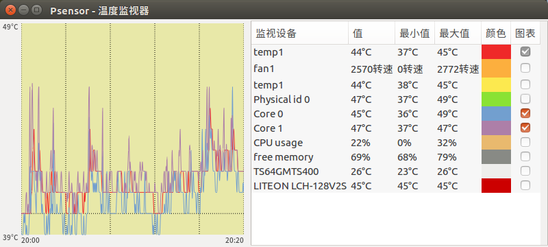
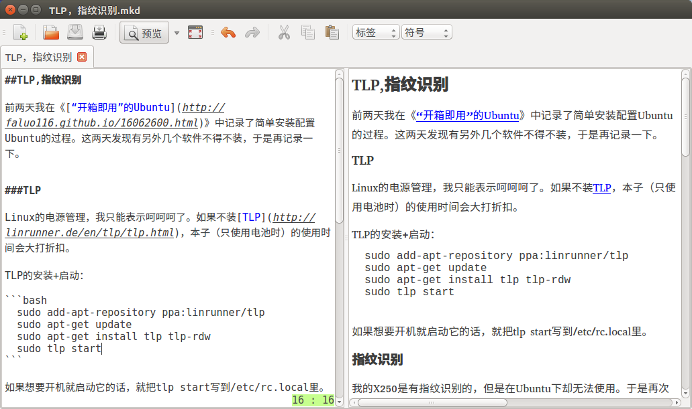

我这里用到的算法是Levenshtein，它又叫“编辑距离”算法，是俄国科学家Vladimir Levenshtein在1965年发明的。百度上有一堆介绍它的文章。如果你会PHP的话，那么从4.0.1版本起有一个叫levenshtein()的函数可供你直接使用。详细的API介绍在这里。我这里只是想把它用自己的大白话再说一遍，并且在后面尝试给出JAVA代码。
我们现在有两个字符串（没错，我是死肥宅）：
String strA = "路人女主的育成法";
String strB = "路人女主的养成方法";
 接下来，我们要在表格中填满数字，填满后，相似度也就可以算出来了。
接下来，我们要在表格中填满数字，填满后，相似度也就可以算出来了。 那么，这堆数是怎么算出来的？
那么，这堆数是怎么算出来的？先来看图中黄色单元格，格子上面、左面和左上的数字分别是1，1，0。再来看这个格子上面和左面的字符，都是“路”字，所以我们把上面和左面的数字加1，左上角的数字不变。于是现在我们得到了2，2，0这三个数字。把这三个数字中最小的一个，也就是0写在单元格中。这个格子就算填完了。
再接下来看右面的蓝色格式，它的上、左和左上也有三个数字（其中左面的数字是我们刚刚填上的），分别是2、0、1，再来看格子上面和左面对应的字符，分别是“人”和“路”字，是两个不同的字符。所以我们把这三个数字分别加1，就得到了3、1、2这三个数字。把这三个数字中最小的一个，也就是1填到蓝格子中就算完成了。
以此类推，就可以把整个表格填完。这些数字代表什么？代表一个字符变成另一个字符串的代价（距离）。代价越高，两个字符串间的相似度就越低。
我知道你是不太明白。看下面这张图。
 图中蓝格中的数字是2，上面格子中的字符是“成”字，左面的是“养”字。它代表，要把上面的字符串“路人女主的育成”变成左面的字符串“路人女主的养”的代价是2。也就是说只要做2步操作，它们就会完全相同：
图中蓝格中的数字是2，上面格子中的字符是“成”字，左面的是“养”字。它代表，要把上面的字符串“路人女主的育成”变成左面的字符串“路人女主的养”的代价是2。也就是说只要做2步操作，它们就会完全相同：1、把“育”字改成“养”字；
2、再把“成”字删掉。
这张表格的最后一个数字，也就是右下角的数字，就是这两个字符串间互相转换的代价。
相似度=1-右下角的数字/两个字符串中最长串的字符数。
在这个例子中，右下角的数字是2，最长的字符串长度是9（左面的那个），相似度=1-2/9=0.78。原理懂了，代码也就不难写了。下面是我写的代码，因为本人水平比较渣，所以简单看看就好：
public static int calcLevenshtein(String strA, String strB) {
char[] cStrA = strA.toCharArray();
char[] cStrB = strB.toCharArray();
int[][] resultArray = new int[cStrA.length + 1][cStrB.length + 1];
// 初始化矩阵
for (int i = 0; i < resultArray.length; ++i) {
resultArray[i][0] = i;
}
for (int j = 0; j < resultArray[0].length; ++j) {
resultArray[0][j] = j;
}
// 开始计算距离
for (int i = 0; i < cStrA.length; ++i) {
for (int j = 0; j < cStrB.length; ++j) {
resultArray[i + 1][j + 1] = Math.min(Math.min(
resultArray[i + 1][j] + 1, resultArray[i][j + 1] + 1),
resultArray[i][j] + (cStrA[i] == cStrB[j] ? 0 : 1));
}
}
float r = 1
- resultArray[resultArray.length - 1][resultArray[0].length - 1]
* 1f / Math.max(cStrA.length, cStrB.length);
return (int) (r * 100);
}
和vsCode比起来，Eclipse还是显得有些臃肿，所以平时用vsCode的时间比较多。虽然不奢望它的功能和IDE一样强大，但是希望至少要有debug功能才够方便。vsCode中正好有这样的插件，就叫PHP Debug。在插件中心就可以搜到它了。
 但是要注意图中的Adapter这个词。这个插件只是个适配器，光装插件是无法debug的，还需要安装xdebug。如果你是PHP程序员，对它肯定十分熟悉。在Windows下安装它十分简单，到xdebug.org按你PHP的版本下个DLL就可以了。但在OSX上稍微麻烦一点点，我曾经尝试过用homebrew来安装，但是失败了，于是找源码来编译。过程还是比较简单的，在它的github上写了详细的步骤，地址是：https://github.com/xdebug/xdebug。
但是要注意图中的Adapter这个词。这个插件只是个适配器，光装插件是无法debug的，还需要安装xdebug。如果你是PHP程序员，对它肯定十分熟悉。在Windows下安装它十分简单，到xdebug.org按你PHP的版本下个DLL就可以了。但在OSX上稍微麻烦一点点，我曾经尝试过用homebrew来安装，但是失败了，于是找源码来编译。过程还是比较简单的，在它的github上写了详细的步骤，地址是：https://github.com/xdebug/xdebug。首先，你需要有phpize，接下来下好源码，cd到源码目录，执行./configure --enable-xdebug和make命令来编译，之后就可以在modules目录下得到xdebug.so文件了，将它拷贝到/usr/lib/php/extensions/no-debug-non-zts-20121212目录下即可。接下来，编辑php.ini文件，在其下加上如下几行：
;xdebug配置
[Xdebug]
;载入Xdebug
zend_extension=xdebug.so
;开启自动跟踪
xdebug.auto_trace = On
;开启异常跟踪
xdebug.show_exception_trace = On
;开启远程调试自动启动
xdebug.remote_autostart = On
;开启远程调试
xdebug.remote_enable = On
;收集变量
xdebug.collect_vars = On
;收集返回值
xdebug.collect_return = On
;收集参数
xdebug.collect_params = On
;端口
xdebug.remote_port = 9001
至此，这个插件就算安好了。可以像在IDE中一样，用vsCode来调试PHP代码了。
前两天我在《“开箱即用”的Ubuntu》中记录了简单安装配置Ubuntu的过程。这两天发现有另外几个软件不得不装，于是再记录一下。
TLP
Linux的电源管理，我只能表示呵呵呵了。如果不装TLP，本子（只使用电池时）的使用时间会大打折扣。
TLP的安装+启动：
sudo add-apt-repository ppa:linrunner/tlp
sudo apt-get update
sudo apt-get install tlp tlp-rdw
sudo tlp start
指纹识别
我的X250是有指纹识别的，但是在Ubuntu下却无法使用。于是再次通过百度解决：
sudo add-apt-repository ppa:fingerprint/fprint
sudo add-apt-repository ppa:fingerprint/fingerprint-gui
sudo apt-get install fingerprint-gui policykit-1-fingerprint-gui libbsapi
温度检测
可能是在用OSX时养成的习惯吧，总是想随时查看机器的温度。在Ubuntu下可以用Psensor。安这个软件比较方便，在软件中心中能搜到，直接安装就好了。

Markdown编辑器
目前我找到的Linux下最好用的markdown编辑器是ReText，实时预览窗口可以关掉（虽然我平时都开着），功能简单够用。同样在软件中心搜下就能找到了。
昨天终于把我的Thinkpad X250低配版的系统由原来的Ubuntu15.10升级为16.04LTS了。虽然到现在为止新系统只体验了2天，但给我的感觉非常棒，需要用到的软件在Linux下也都有替代版，并且简单易用。这么说吧，这次安装Ubuntu，基本上也让我体验到了Mac下的“开箱即用”的感觉。
我的机器配置并不高，是X250的低配版，自己换了条8G的内存。

因为懒，所以哪怕是用Linux，也不想折腾（不，不要跟我提什么不想折腾就去用windows）。我平时用电脑做的事也非常少，50%时间用来处理锁事（看新闻，收发邮件等等），另50%用来编程。我实在不想把工作中的事拖到生活中，所以工作时写的项目，java,svn,eclipse,maven,mysql,tomcat等等这些东西是绝对不许出现在自己的电脑中的。我这里所说的编程，只是写写php，js，css，用git来管理一下版本，用nginx跑自己的项目臭美一下而已。所以你看，我的需求非常少。用Ubuntu来满足我这点小需求，简直太轻松了。现在就来看看我装好系统后设置了什么，装了什么软件吧。
设置
首先，解决一下经常断WIFI的问题。在我的机器上，无论是15.10还是16.04,WIFI每过一段时间就会掉线。不知道在别的机器上是否也如此，于是我百度了一下，找到了下面的这个方案，解决了这个问题：1、直接打开终端，输入下面的命令：
sudo vim /etc/ppp/options/
2、把lcp-echo-failure和lcp-echo-interval的值都改成30。
其次，把Launcher由屏幕左边改到下边。这是我的个人习惯，不喜欢把Launcher长期固定在一个地方。下面两条命令可以控制Launcher的位置：
gsettings set com.canonical.Unity.Launcher launcher-position Left
gsettings set com.canonical.Unity.Launcher launcher-position Bottom
最后，安装五笔输入法。不知道为啥我装好系统后发现只有全拼，没有五笔输入法。一下子觉得不会打字了。可以在终端中运行这条命令把它装回来：
sudo apt-get install fcitx-table-wubi
好了。我设置完了。就只设置这3项。其它如驱动啊电源管理啥的，一概不管，就用默认的（因为我懒啊）。下面开始装常用软件。
解决需求
一、前50%的需求，也就是处理锁事。主要是上网看看新闻，收发邮件，偶尔听听歌。
Ubuntu内置FireFox浏览器，直接用它就可以了。最多安装些你平时喜欢用的插件。所以看网页新闻这类需求不需要额外安装任何软件就解决了。接下来是收发邮件。Ubuntu内置的的邮件工具是Thunderbird。如果你习惯了其它平台的邮件客户端的话，一定也可以直接上手Thunderbird。所以收发邮件的需求也不需要额外安装软件来解决。最后的需求是听歌。如果你习惯用某云音乐的服务的话，可以直接在线听。如果喜欢客户端，他们也有Linux的客户端可用，并且还细分为Deepin版和Ubuntu版。32位和64位的都有。Ubuntu自带的音乐管理软件是Rhythmbox。管理方便+支持无损+开源+各种插件，用它就够了。
所以，我这50%的需求，不需要安装任何软件就全都解决了。
二、后50%的需求，即我对编程的需求。需要安装的软件有git,nginx,php,辅助的有vim，sftp工具和GUI下轻量级的代码编辑器。
先来解决nginx和php。很简单，apt-get就好了，想必大家都知道。vim也可以这么解决。并且现在可以通过apt-get来安装php7了。

然后，来解决sftp。也很简单，推荐FileZilla。除了Linux外，还有OSX和Windows版，挺有名的软件，用起来也很方便。可以在官网下载，也可以直接在Ubuntu的软件中心搜索安装。
最后，安装一个GUI下的编辑器。我用的是微软的vsCode。直接去官网下deb包安装就行了。我在Mac下用的也是它，所以Linux下仍然选它。
其实从我开始安装系统，到把这几个常用软件安装好，一共也就用了40分钟左右的时间。还是很简单的，没多做啥设置也没安太多东西。系统自带的软件本身品质就不错，可以满足绝大部分的日常需求，也不需要担心流氓软件。不知道你有没有从中体验到“开箱即用”的感觉呢？
对于后端开发来说，用JS主要做2件事，还都是很基础的事：
1、获取并验证；
2、提交到后台。
“验证”就不说了，每个项目对获取的数据的验证要求都不一样，“获取”和“提交”可以稍微谈谈。一般也就是用JS获取文本框，或者DIV，SPAN里的内容，再用AJAX提交一下。这些写法比较固定，简单。把下面的代码拷过去改个名字就能用了。
(下面代码用到了jQuery)
获取文本框内容
HTML：<input type="text" value="" id="input_test" onkeypress="getInputTest()"/>
function getInputTest(){
var tmp = $("#input_test").val();
alert(tmp);
}
遍历所有文本框
HTML：<div id="lots_of_text">
<input type="text" value="text_01" id="input_mult_1"/><br/>
<input type="text" value="text_02" id="input_mult_2"/><br/>
<input type="text" value="text_03" id="input_mult_3"/><br/>
<input type="text" value="text_04" id="input_mult_4"/><br/>
<input type="text" value="text_05" id="input_mult_5"/><br/>
</div>
<input type="button" value="CLICK" id="click_me"/>
$(function(){
$("#click_me").click(function(){
var length = $("#lots_of_text input:text").length;
for (var i = 0 ; i < length ; ++i){
alert($("#input_mult_" + (i + 1)).val());
}
});
})
获取DIV/SPAN
HTML:<div id="div_test" onclick="getDivTest()">这是一个DIV</div>
<span id="span_test" onclick="getSpanTest()">这是一个SPAN</span>
function getDivTest(){
var tmp = $("#div_test").text();
alert(tmp);
}
function getSpanTest(){
var tmp = $("#span_test");
alert(tmp.text());
tmp.text('被JS改了');
}
获取DIV数组
HTML:<div id="div_array_test" onclick="getDivArrayTest()">
<div id="div_sub_1">Array01</div>
<div id="div_sub_2">Array02</div>
<div id="div_sub_3">Array03</div>
<div id="div_sub_4">Array04</div>
<div id="div_sub_5">Array05</div>
</div>
function getDivArrayTest(i){
var divs = $("#div_array_test div");
divs.each(function(){
alert($(this).text());
});
alert(divs.length);
divs.eq(0).text('下标从0开始');
divs.eq(3).text('第4项值被改掉！');
}
生成一个表单
HTML:<input type="button" value="CLICK" id="form_click"/>
$(function(){
$("#form_click").click(function(){
var form = document.createElement("form");
document.body.appendChild(form);
var text = document.createElement("input");
text.type = "text";
text.name = "new_text";
text.value = "动态生成的。一般都生成hidden。";
form.appendChild(text);
var b_submit = document.createElement("input");
b_submit.type = "submit";
b_submit.name = "b_submit";
b_submit.value = "点我提交";
form.appendChild(b_submit);
form.name="new_form";
form.method="post";
form.action="#"
// form.submit();
});
})
生成点其它乱七八糟的东西
HTML：<input type="button" value="CLICK" id="create_others"/>
<div id="parent_div"></div>
$(function(){
$("#create_others").click(function(){
$("#parent_div").append('<div>Hello world~!</div>');
$("#parent_div").append('<span id="create_span" style="color:#FF0000;" onclick="alert(\'其实这个例子毫无意义:(\')">Hello span~!</span>');
});
})
烂大街的AJAX……
HTML:<input type="text" id="ajax_text_1" value="啧"/><br/>
<input type="text" id="ajax_text_2" value="ze"/><br/>
<input type="button" value="啧" onclick="ajaxCommit()"/>
function ajaxCommit(){
var t1 = $("#ajax_text_1").val();
var t2 = $("#ajax_text_2").val();
$.ajax({
url:"index.php",
type:"post",
dataType:"text",
data:{
"t1" : t1,
"t2" : t2
},
success:function(returnData){
alert(returnData);
}
});
}
$t1 = $_POST["t1"];
$t2 = $_POST["t2"];
echo $t1 . " " . $t2;
前两天入了个新玩具。本来对于音频设备不是太感冒，“音质”也属于比较主观的的概念，但在知道这部入门的国砖后，还是第一时间入了，没犹豫。能听一听无损我就很满足了。并不想太发烧。
 然而，我并没有好的耳机。现在在用的只有一条AKG的K420，还有一条铁三角的ATH-C770。都是入门中的入门货色。所以下一步打算入个差不多的，入门的耳机吧。只要比我现在用的好些就行。还是那句话，我不想在这上面花太多的钱，差不多就成了。
然而，我并没有好的耳机。现在在用的只有一条AKG的K420，还有一条铁三角的ATH-C770。都是入门中的入门货色。所以下一步打算入个差不多的，入门的耳机吧。只要比我现在用的好些就行。还是那句话，我不想在这上面花太多的钱，差不多就成了。Older >